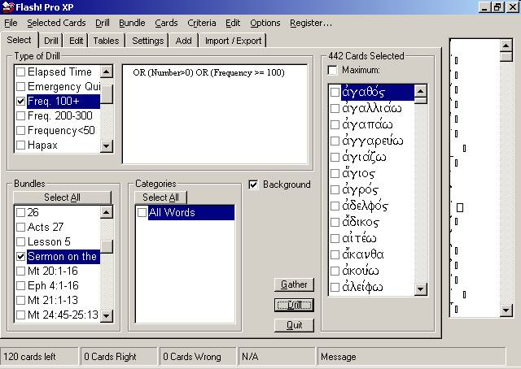
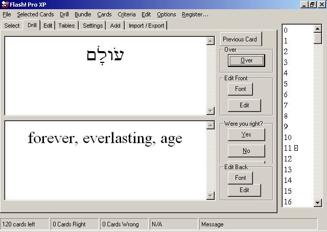
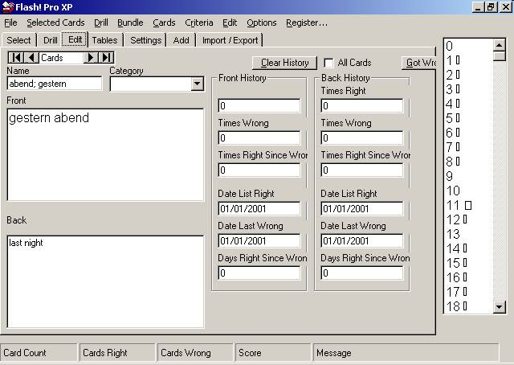
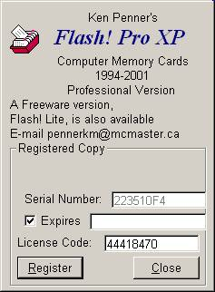

Flash! Pro Vocabulary
Memorization Software
Download now (free 30-day trial for new
users) or update (for current users).
February 6, 2004.
Flash!
Pro XP Vocabulary Software
|
Flash! Builds your
vocabulary by showing the foreign-language word, then showing the
English word and asking whether you got it right or not, and
keeping track of your answers. |
Includes:
- Greek
- complete NT vocabulary list, selectable by passage and
frequency
- keyed to Mounce, Dobson, Metzger, JACT
- Hebrew/Aramaic
- complete biblical vocabulary, selectable by passage and
frequency
- complete Qumran vocabulary, selectable by reference and
frequency
- keyed to Seow(1st and 2nd),
Greenspahn, Johns

Modern
Hebrew
- Latin keyed to Wheelock, Collins
- German
- French
- Sanskrit (9000 words!)
-
ANE Chronology
And more!
- What is Flash!
Pro?
-
What Makes
Flash! Pro Stand Out?
-
Screen shots
-
Download Flash!
Pro
-
Registration
-
Join the Flash!
Pro Fans support group
-
Flash! Lite
Contact the author
What is Flash!
Pro?
Vocabulary memorization flashcard software for any language or
subject.
Flash! Pro tests
vocabulary like Flashworks and Memcards: by showing the
foreign-language word, then showing the English word, and asking
whether you got it right or not, and keeping track of your answers.
What Makes Flash! Pro Stand
Out?
Features
Consider three ways to learn vocabulary:
- Make paper flash cards
Write the word to be learned on one
side, and the English glosses on the reverse. Tedious and
time-consuming, this method can be appropriate for introductory
students if premade vocabulary lists are available (e.g., in a
textbook).
Pros: portable; writing the cards can help memory.
Cons: English glosses can be misleading (does ἐκκλησια
mean a church building?); much time is wasted reviewing cards
one already knows.
- Read primary texts, looking up words in the lexicon as
needed
This method tends to be used by more advanced students and
scholars. Vocabulary lists are generally not available for specific
passages, but tools like Kubo for the New Testament and ABC for the
Hebrew Bible can be helpful.
Pros: a word’s range of
meaning becomes apparent
Cons: a word “learned” this
way is not likely to stick in one’s memory unless somehow
reinforced. The lexicon work can be time consuming and interrupt the
flow of the reading, impairing the literary and rhetorical force of
the text.
A combination approach: memorize the basic glosses of the
words in the primary text, then read the passage smoothly, adjusting
one’s understanding of the words to the context.
Pros: the
flow of the reading is maintained, permitting the literary and
rhetorical force of the text to be seen. The reading is enjoyable
rather than frustrating!
Flash! Pro’s three
outstanding database features
Most computer vocabulary learning programs imitate the first
method of learning vocabulary, improving on it by removing some of
the tedious tasks by making the cards virtual rather than physical. A
card front (the foreign language word) is displayed on the screen,
the user tries to remember what the English gloss is, then presses a
button, and the English gloss is displayed. The user presses a button
to tell the software whether they guessed right or not. Flash!
Pro is built on this same model, of course, but does
far more as well.
What makes Flash! Pro
stand out above other computer vocabulary programs? It also
facilitates the best of the above-mentioned methods (the
last), through its unique vocabulary databases. The databases for the
New Testament, Hebrew Bible, and Qumran non-biblical texts have three
features that make this third method possible. They are:
- Complete
Every word in the primary texts is included, right
down to the hapax legomena.
- Selectable by passage
One can easily choose to learn only
those words that occur in the passage to be read.
Keyed to frequency
One can concentrate on the most common
words in the corpus, learning them first before moving on to the
rarer words.
Flash! Pro’s three
outstanding application features
Flash! Pro complements
the above database features with unparalleled power and flexibility
in the application itself:
- HTML
One can edit the cards in the database with any HTML
formatting codes. In other words, anything that can be displayed on
a web page can be displayed on a card front or back. One can use
bold, italics, fonts, sizes, tables, graphics, even sound!
- SQL
One can select the cards to memorize by any standard
database (SQL) search expression, on any field in the database. For
example, Flash! Pro keeps
track of when you last got a card right, wrong, and how many times
Timed Review
For example, Flash!
Pro databases come with a pre-defined SQL expression
to identify which cards one has been having most trouble with --
which cards one is most likely to forget next. This expression will
select for drilling those cards that have not been answered
correctly for a period of time longer than the time between the last
time right and the last time wrong. Sound complex? Maybe. But one
needn’t understand how it works to take advantage of
its power. It is extremely effective and efficient, and simple to
use!
Flash! Pro meets the needs of
three types of users:
- Students
Flash! Pro
more than meets the needs of students of introductory Greek, Hebrew,
Aramaic, Latin, French, and German. Many of the vocabulary databases
for these languages are keyed to standard textbooks such as Mounce,
Seow, and Wheelock, so that one can concentrate on one lesson at a
time. For textbooks not already supported, users can arrange the
cards into their own “bundles” to match their vocabulary
lists.
More advanced students are often tested by translation
quizzes on specific passages. For example, for the PhD Greek
requirement at McMaster, every two weeks we were tested on our
ability to translate several chapters of Acts. How easy it is to
tell Flash! Pro to make a
bundle of all 485 words in Acts 1-3, and drill me on the 143 words
in that bundle I do not already know, beginning with the most common
words, working down towards rare words, all the way to the hapax
legomena. By the end of one semester I had learned all 2000
words in the book of Acts.
Similarly, in preparation for a French
examination one summer, for three weeks I used Flash!
Pro to learn 1346 words, spending only an hour and a
half each day. That’s one minute per word! At this rate a
typical student using Mounce’s textbook would spend less than
15 minutes per week on vocabulary!
- Pastors
Flash! Pro
is often used to prepare sermons on specific biblical passages. The
preacher uses Flash! Pro
to memorize the vocabulary of the passage before turning to the
original text to read it with relative ease. Without the distraction
of flipping to a lexicon every time an unfamiliar word is
encountered, the preacher can gain a better sense of the passage’s
coherence and logical or narrative flow. The preacher will be more
attuned to possible aesthetic or literary devices present in the
text, facilitating a more comprehensive understanding of the text.
Flash! Pro is not of
course meant to replace in-depth lexical work, but it helps the
preacher identify which words do merit further investigation.
Scholars
As is the case for preachers, scholars too can
benefit from less a tedious reading experience. Even those of us who
prefer to read the scriptures in their original languuges (for
whatever purpose) do not remember every Greek, Hebrew, and
Aramaic word in the Bible. And most of us like to keep up our
vocabulary over the years. Flash! Pro
can keep track of those words we need to refresh the most, and bring
them up for us at the right time.
Screen Shots


Download Flash! Pro
Full installation package
(10.5MB)
Update (unZIP this file, replacing
your current FlashProXP.EXE) (182KB)
Registration
When you run Flash! Pro
for the first time, a welcome screen will inform you that your copy
is unregistered:

For a free 30-day trial, email me the
serial number displayed on your welcome screen, and I will send you a
corresponding temporary license code with expiry date. When you are
ready to register, send me (pennerkm@mcmaster.ca) your serial number
along with your $50 payment through http://www.paypal.com, and I will
send you your License Code which will enable the program.

Flash! Pro can also be
rented for $5/ month. Again, send me your Serial Number and Date you
would like your license to expire, and I will send you the
appropriate License Code.
Email me for details.
Join the
Flash! Pro Fans e-group
Download updates, bug fixes, share databases with other users, get
your questions answered, tips, tricks, and more!

Click
to subscribe to Flash! Pro
mailing list
OR
Flash! Lite
For Windows 3.1; Greek New Testament words occuring more than 10
times.
Contact me:
Feedback
Visitors since Dec. 17, 2003: